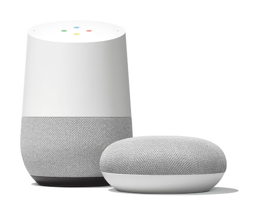

Un asistente de voz inteligente

Se trata de un altavoz inteligente que sirve como estación central para el Asistente de Google, o Google Assistant. Mediante la aplicación Google Home que descargamos en nuestro móvil o tablet podemos administrar las cuentas y otros dispositivos vinculados a él.
Especificaciones
Control por voz/ Tactil
Altavoces
Micrófonos
Conectividad
Responder preguntas directas. "Qué tiempo hace" o "cuándo juega España" son algunas de las preguntas directas que nos podrá resolver y que, lógicamente, buscará en Google.
Responder preguntas indirectas. No solo nos contesta preguntas directas, si no que nos entenderá cuando le decimos que tenemos calor, hambre o que estamos aburridos.
Asistente personal. Puede ponernos alarmas, recordatorios, añadir cosas a nuestra lista de la compra, leernos noticias o recordarnos qué tenemos hoy en la agenda.
Hogar inteligente y conectado. Google Home se puede conectar con Netflix, Spotify y con cualquier dispositivo inteligente (como un Nest, unas Philips Hue o cualquier gadget con enchufe inteligente). Podremos controlar todo el ecosistema de dispositivos inteligentes desde Google Home. En nuestro caso, desde encender una máquina de hacer palomitas, pasando por apagar las luces hasta mandar el típico mensaje de "¡Niños, a cenar!" por un altavoz bluetooth.
Entretenimiento y cocina. Google Home nos cuenta chistes en español (bastante malos, por cierto), nos canta canciones (en las que incluso hay gallos de verdad) o incluso podemos pedirle que nos sorprenda y entonces nos contará algún chascarrillo o tontería para hacernos reír. También puedes preguntarle recetas (como la de la tortilla de patatas) y te la explicará resumidamente con los pasos básicos.